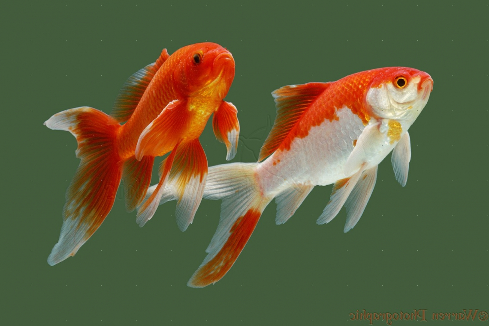

The comet-tailed goldfish breed was developed in the United States from the common goldfish by Hugo Mulertt, a government worker, in the 1880s. The comet goldfish was first seen in the ponds of the U.S. Government Fish Commission in Washington, D.C..[1][2] Mulertt later became a propagator of goldfish and an author of books on goldfish. He introduced the comet onto the fish-keeping market in quantity.
The comet goldfish can be distinguished from the common goldfish by its long, single and deeply forked tail fin. Comets with yellow, orange, red, white, and red-and-white coloration are common. The red coloration mainly appears on the tailfin and dorsal fin, but can also appear on the pelvic fin.
The comet is more active than most other goldfish breeds. It is not unusual to see a comet dashing back and forth in its tank, racing around in a playful manner. Due to the comet's hardy and active nature, and the relative ease in caring for them, they are the breed best suited to ponds and outdoor pools. They are often kept with koi in outdoor ponds. Comets have a natural life span of 5 to 14 years and may live even longer in optimal conditions.